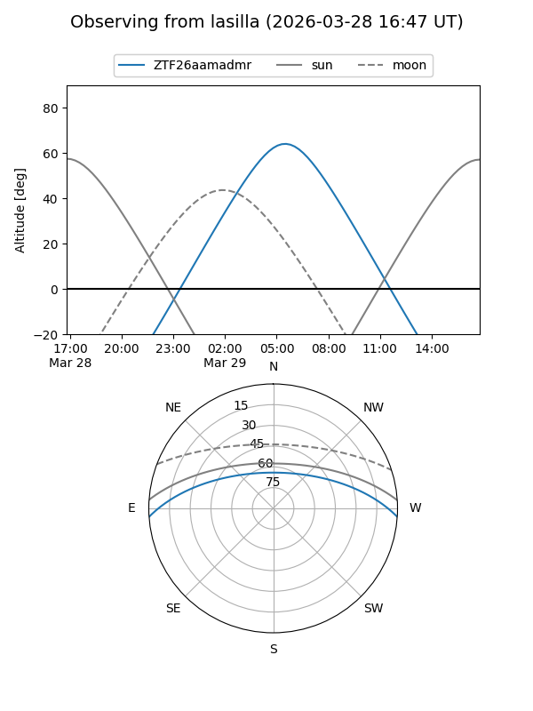
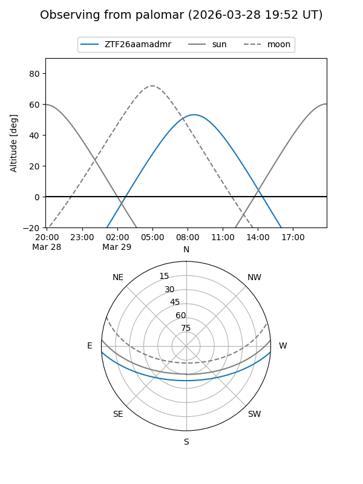

ZTF26aamadmr
Target ZTF26aamadmr at 2026-03-29 10:32
Aliases and brokers:
FINK: link
Lasair: link
ALeRCE: link
alt names
ZTF26aamadmr (ztf,fink_ztf)
Coordinates:
equatorial (ra, dec) = 197.9356,-3.24459
equatorial (HMS+DMS) = 13:11:44.55,-03:14:40.52
galactic (l, b) = (312.8765,+59.23455)
Flags:
Photometry:
last ztfg=17.82
1 ztfg detections
Lightcurve
Visibility


Additional plots